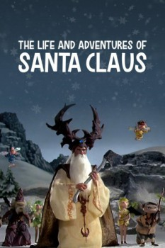

Country:United States, 50 minutes
Spoken languages:Spanish, English
Genres:Animation, Family
Director(s):Arthur Rankin Jr., Jules Bass
Writer(s):Jules Bass
Video Codec:Unknown
Number: 101

Certification:G
Storyline:
The Great Ak calls a council of the Immortals to ask that Santa Claus be given immortality. And to justify it, he tells the history of Santa Claus. The Ak found an abandoned baby and gave it to a lioness and a fairy to raise, who named him Claus. When Claus grew up, the Great Ak showed him the evil and hardship in the world and Claus decides to live there and relieve some of the suffering. He decides to make toys for orphans, but King Awgwa, the ruler of the valley where Claus lives doesn't want the children to be happy, and there is a great battle among Immortals.
Cast:
Earl Hammond (voice of Santa Claus), Earle Hyman (voice of King Awgwa), Larry Kenney (voice of Commander of the Wind Demons), Lynne Lipton (voice of Queen Zurline / Wife / Additional Voices), Bob McFadden (voice of Tingler)
Medium: Media file,
Location: D:\$RECYCLE.BIN\$RP4ESGP\The Life and Adventures of Santa Claus.mp4
Loaned: No
Aspect ratio: Unknown